The TACTIC Event System is built into the base transactional system in Tactic’s core. Every transaction which occurs in Tactic can fire an event which in turn, can be used to execute a trigger or notification.
These events can be incorporated to automate specific processes that are often repetitive. At the simplest level, there are interfaces that help prepare and configure these aspects but, it is good to understand how they work. Overall, there are 2 levels that these events can be configured. The first is using the predefined event options provided in the Project Workflow or Project Schema interfaces and the second in the low level database events.
Predefined Events
The following list of events are the events provided in the Project Workflow interface. For more information in setting up Notifications and Triggers with this interface, please refer to Project Automation - Triggers and Project Automation - Notifications
A task Status is Changed | When the status of a task is changed. Further options are provided allowing for selection. |
A new note is added | When a new note (sthpw/note) is added to the project. |
A task is assigned | When a task is assigned to a user. |
Files are checked in | When files are checked in to an SObject. |
Files are checked out | When files are checked out from an SObject. |
Custom event | Allows for calling of an event using the raw Database Events. |
Raw Database Events
Below is the list of the database level events. These events are run regardless of how they are called (interface, api, external integration etc)
done | Executed each time a transaction completes |
insert | Executed each time a Search Object has been inserted. |
update | Executed each time a Search Object has been updated. |
change | Executed each time a Search Object has changed. This combines the events insert, update and delete. |
retire | Executed each time a Search Object has been retired. |
delete | Executed each time a Search Object has been deleted. |
checkin | Executed each time a checkin occurs for a Search Object |
checkout | Executed each time a checkout occurs for a Search Object |
timed | Executed on a timed interval. This is only supported for triggers. |
For example, in a transaction where the status of a task is being changed, an association to this event can be made with the following notation:
update|sthpw/task|assigned
The notation can consist of 3 sections although only the event is required.
<Event>|<SType>|<Column>
Event | The raw database event. |
SType | The Searchable Type (SType) the event is occurring for. |
Column | The Column that was changed in the SType. |
Triggers are events that are called upon a transaction to automate workflow. These triggers can be accessed within the Project Workflow view.
Admin Viwes → Project Admin → Project Workflow
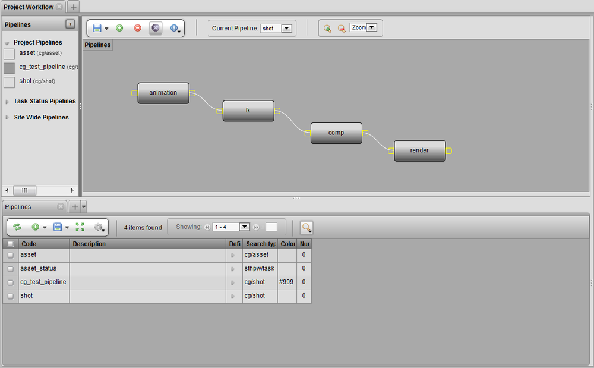
Each process in the pipeline can have their own triggers. Right clicking on a process and choosing show notification/trigger option will open a tab to define a trigger for that specific process.
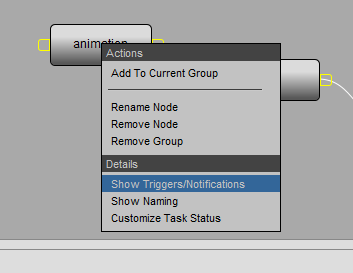
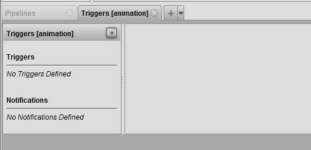
The trigger tab will also display the assigned process. Clicking the insert button will open the trigger UI.

Title | Title of the trigger. |
Description | Description of the trigger. |
Unique Code | [multiblock cell omitted] |
Event | Drop down list of trigger events. This event is where the trigger is called. |
Action | The action is what the event will |
EVENT
The Events drop down list provides a wide range of different triggers.
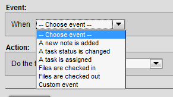
Depending on the trigger the Event box may show additional options.
A new note is added - This Event will be called when a new note is inserted into the process.
A task status is changed - This event will be called when a status is changed. The event box also gives a additional option to choose specific status.
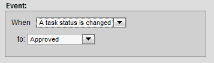
A task is assigned - This event will be called when any task in the specified process is assigned.
Files are checked in - This event will be called when there is a checkin to the specified trigger. This event also gives a additional option to choose what process the action will effect.
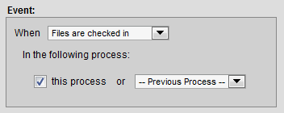
Files are checked out- This event will be called when there is a checkout to the specified trigger.
Cusom Event -
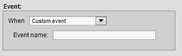
ACTION
The Action drop down list provides a series of predifined actions that work with the above events.

Send a notification - See project automation notification docs.
Update another task status - This action will update a task status. This action also opens additional options to update status of current and other process of the pipeline as well as the option of status.
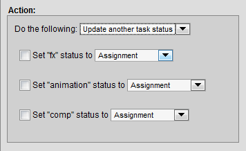
Create another task - This Action will create a task upon event. This action also opens additional options to choose from creating a task in current or next process.
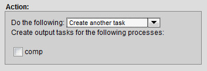
Run python code - This Action will run python code upon event. The action box opens additional options to name and insert a python code.
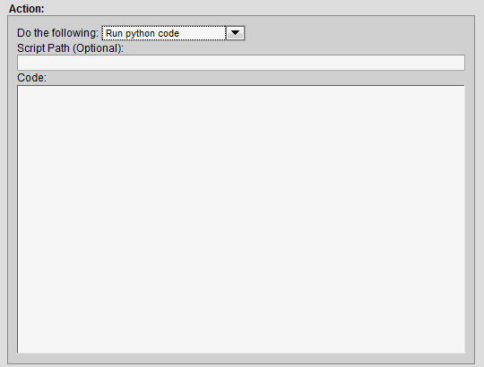
Run python trigger - This Action will run python trigger upon event. The action box opens additional option to insert the name of the trigger. These can be custom written scripts that can be called from Tactic’s API.
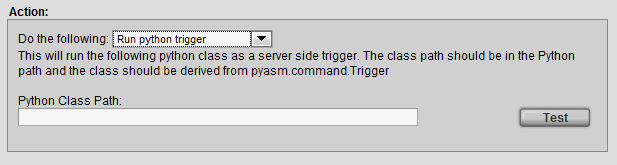
When satisfied with the options set to run a trigger, the trigger must be saved in order to be applied. When the trigger is saved the title of the trigger will appear benieth the triggers panel.
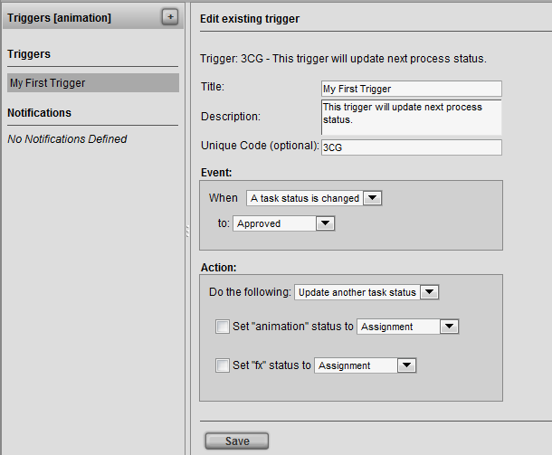
There are no limitations of how many triggers you can have. Each process can have multiple triggers applied.
Description
Notifications are sent to inform the user that a particular transaction or event has occurred.
They are stored in a notification_log which can be found under Admin Views → Site Admin → Notifications.
Notifications.
Notifications present information reported by transactions. They usually include what items are created or updated in addition to a description of the command. Below is an example of a notification:

With the mail server setting set up properly (set in the TACTIC Config file), TACTIC can send out email notifications to users.

Implementation
There are 2 perspectives to work from when configuring notifications in TACTIC.
- Project Workflow - Notifications can be set up per process in a pipeline which are used to automate the pipeline/workflow
- Project Schema - Notifications can be set up at a simpler level where any of the Raw Database events can be used to trigger a notification regardless of process.
Project Workflow
In the Workflow Editor, right click on a process and choose show notification/trigger to open a tab to define a trigger for that particular process.

This will open a new Triggers tab in the panel at the bottom for the assigned process.
Click the [+] button to insert a trigger. This will open the trigger/notification UI.
Notifications and Triggers work together in many ways. A notification is defined as an Action. To send a notification, an event must occur.
In the Action drop down list Send a Notification must be selected.
Send a Notification - This action will send a notification. The action box will open additional options to insert a subject and message.
Below is an example of a notification being sent on the event when a task status is changed to review:

The Mail To: and Mail CC: input fields accepts the following types of input:
Email - Capability to add regular emails allows to send personal email addresses e.g. joe@my_email.com
Group - Capabilty to send to a group of users in TACTIC e.g. Supervisor
Expression - Capabilty to insert expressions that specifies a user in TACTIC. All expressions are identified by curly brackets "{}". e.g. {@SOBJECT(sthpw/login)}
Send a Notification - This action will send a notification. The action box will open additional options to insert a subject and message.
Below is an example which uses more expressions for a notification being sent whenever a task is assigned.

Project Schema
All notification configurations can be accessed through Admin Views → Site Admin→ Notifications

If there is no process specified, then the notification will be triggered regardless of process. e.g. during a snapshot or a checkin
The notification view is located in the TACTIC Sidebar under:
Site Admin → Notifications
This can also be accessed through the Workflow Editor, by right clicking on a node and selecting from the context menu Show Triggers/Notifications.
This view provides all the functionality required to set up the various types of notifications used to establish better production communication and instant status updates.

Insert Notifications
To insert a new notification, select from the sidebar:
Site Admin → Notifications
The following table explains the basic usage of each property.
Event | The TACTIC event to execute the notification for |
Project Code | The project code for the notification. This allows for filtering of notifications for a specific project |
Type | The type of notification being sent. By default for notifications, this must be set to "email" |
Search Type | The search type attribute identifies the parent sType if the event is for a task, note, or snapshot. It used to be achived by adding a rule as in Example 2. |
Mail_to | An expression of the users to mail to in the email (supports multiple lines of expressions and / or email addresses and names of groups of users made in TACTIC) |
Mail_cc | An expression of the users to mail to in the email. It will appear in the cc category. (supports multiple lines of expressions and / or email addresses and groups) |
Mail_bcc | An expression of the users to mail to in the email. It will appear in the bcc category. (supports multiple lines of expressions and / or email addresses and groups) |
Note: The default is to email the person that causes the notification to fire through the event set up. To turn off this behavior, you can add an entry in Project Setting: key = email_to_sender , value = false.
Below are examples of what can be used in mail_to, mail_cc, or mail_bcc:
For example, email the user admin only:
@SOBJECT(sthpw/login['login', 'admin'])
For example, send to the user related to this sObject. If this is an event for task update, the email will be addressed to the assigned user:
@SOBJECT(sobject.sthpw/login)
If it is already a task for the event update|sthpw/task, which contains the assigned or supervisor attribute, the email will be addressed to both by just retrieving these attributes in two lines.
@GET(sobject.assigned) @GET(sobject.supervisor)
Let’s say you want something simpler and skip the use of task. If you have an sType called mystuff/manager that already contains an email address or comma separated email addresses in an attribute called email, you may want to email to the dedicated manager for a paricular shot. Assuming your shot sType mystuff/shot and mystuff/manager has a schema connection already, you can email them when updating your shot with the event update|mystuff/shot.
@GET(sobject.mystuff/manager.email)
If you want to email to the same manager David and a person named Carin defined in Users when updating any shots with the event update|mystuff/shot, there is no need to start off with the variable sobject representing the shot in transaction.
@GET(mystuff/manager['first_name']['David'].email) @GET(sthpw/login['first_name']['Carin'].email)
For example, send to the user related to this sObject as well as the user john. If the event is insert|sthpw/note, it will be the person who enters the note. If the event is update|sthpw/task, the person is the assignee of the task:
@UNION(@SOBJECT(sthpw/login['login', 'john']), @SOBJECT(sobject.sthpw/login))
To make these mail_to expressions more readable, put more than 1 expression or email addresses on multiple lines. There is no need for @UNION. @GET can even be used to just get to the list of login names.
For example, to send to everyone in the supervisor group, the assignee of a task, to all the users in the mangers group and the email address support@southpawtech.com, enter 3 lines under mail_to:
@SOBJECT(sobject.sthpw/login) @GET(sthpw/login_in_group['login_group','supervisor'].login) managers support@southpawtech.com
More on Expressions in Notifications
The word "sobject" often appears in the Mail to: column but not in Message or Subject. This is because the implementation allows sending notifications to users related to the current sObject or just about anyone not necessarily related to the current sObject. As illustrated above, @SOBJECT(sobject.sthpw/login) is the task assignee but the users under the group supervisor is not related to this task and so the keyword "sobject" is not used. In the Message area, to refer to the current sObject status (task status if the event is update|sthpw/task), just use an @GET(.status), as the sobject is always assumed to be in this context.
Task related notification
To establish the relationship between the login search type and task search type, the following built-in schema line is used. It is not necessary to add it to the schema. It can be used as an example to create a custom search_type.
<connect to='sthpw/task' relationship='code' from_col='login' from='sthpw/login' to_col='assigned'/>
Note related notification
To establish the relationship between the login search type and note search type, the following built-in schema line is used. It is not necessary to add it to the schema. It can be used as an example to create a custom search_type and to edit the schema.
<connect to='sthpw/note' relationship='code' from_col='login' from='sthpw/login' to_col='login'/>
Sending a notification to the person who just entered the note is not often used. Instead, an email handler can be used in this situation to send to the supervisor and assignee of the task under the same context. A built-in email handler is called "pyasm.command.NoteEmailHandler". Instead of entering it into an expression for mail_to, enter it into the email_handler_class field.
Email Test

Once the fields event, mail_to, and message are properly filled in, to test the email, click on the Email Test button. It catches syntax errors or typos in expression in these fields as well as reporting any email server error if the service section of the TACTIC config file has not been properly filled in. Settings like firewall and TLS settings may also block an email from being sent out.
Example 1:
In this example, the notification will be sent out each time a ticket is updated. It will also only send to users in the admin and moderator groups.
Event | update|support/ticket |
Description | Sent when tickets are updated |
Subject |
|
Message | [multiblock cell omitted] |
mail_to | admin , user@gmail |
Rules | [multiblock cell omitted] |
Email Handler Class | [multiblock cell omitted] |
Project Code | support |
Type |

Example 2:
In this example, the notification will be sent out each time a shot-based note is updated. It will send to manager’s group and everyone assigned to the tasks of the shot. Since project_code is left empty, this works across all the projects in the system.
Event | insert|sthpw/note |
Description | Sent when shot-based notes are added |
Subject | {$PROJECT} {@GET(parent.sequence_code)} - {@GET(parent.code)} {@GET(.process)} |
Message | 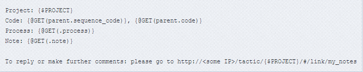 |
Rules | 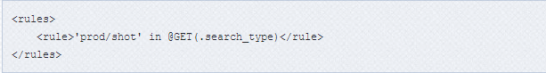 |
Email Handler Class | [multiblock cell omitted] |
Project Code | [multiblock cell omitted] |
Type | |
mail_to | 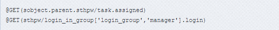 |
Example 3:
In this example, the notification will be sent out each time a note is added. It also allows users to have their own Email Message Template and preserve its html format.
Event | insert|sthpw/note |
Description | Sent when new note is added |
Subject | TACTIC: a new note has been added. |
Message | 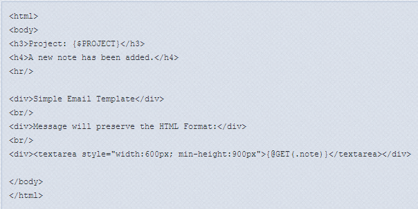 |
Rules | [multiblock cell omitted] |
Email Handler Class | [multiblock cell omitted] |
Project Code | [multiblock cell omitted] |
Type | |
mail_to | admin, user@gmail.com |

Notification Expressions
TACTIC uses the TACTIC Expression Language to build dynamic Notification Subject and Message contents. This allows for each notification to be sent based on properties from the Search Objects it is being sent for.
In the simple example Subject below, the "id" property is used from the "ticket" search object.
TACTIC Ticket {$GET(.id)} has been updatedThe expected results of this would be similar to the following:
"TACTIC Ticket 14 has been updated"
Example 1
In essence, anything between the curly brackets "{}" is evaluated as an expression by TACTIC.
Note
For more information regarding TACTIC Expression Language please refer to the TACTIC Expression Language docs
Filtering Notifications
TACTIC’s notification architecture is a rules-based system built using the trigger architecture. Every time a command is executed, TACTIC looks through the list of defined triggers (including notifications) for a match. Under the Triggers view will be an entry for the EmailTrigger class that is registered under the "email" event. It is possible to create custom Email Trigger handlers in that view.
There are 3 main criteria used to filter out notifications:
- group: Filters out notifications to be sent only to users in the included groups.
- project: Filters out notifications so that only a certain project can fire the email trigger.
- rules: Rules are an XML snippet which can finely control the conditions when an email trigger may be fired.
Groups
By planning groups to send notifications to, it allows for simple connections for deciphering which groups of users will receive notifications when the conditions of a particular notification rule are met. Once a notification has been created, it can be associated with any number of groups of users. All users in this group will then be sent a notification when the rule is triggered.
The Groups view can be found under:
Admin→Site Admin →Groups
To specify a group to send a notification to, specify the group in the mail_to column.
Project
By setting the project in the project column of a Notification, TACTIC will only use the notification trigger for the chosen project.
Access Rules
When a notification rule has passed all of the criteria, a message is constructed. Most email events occur after a command has been completed. The email handler then takes the information from the command and creates a default message to be sent to the appropriate people.
All rules are contained in groups. For notifications, there are a few predefined groups:
Example 1
This rule group only allows tasks for prod/asset for the project sample3d to send out notification. Otherwise, it would send out notifications for tasks of all search types
<rules> <rule>@GET(.search_type)=='prod/asset?project=sample3d'</rule> </rules>
Example 2
This rule group makes use of a key/value pair of attributes: that is, when the attribute with the value of "key" is equal to "value", the rule is passed. In the example below, all SObjects containing the attribute "context" with the value "client" are triggered.
(deprecated)
<rules>
<rule group="SObject" key="context" value="client"/>
</rules><rules>
<rule>@GET(.context)=='client'</rule>
</rules>Example 3
For certain SObjects in TACTIC (like tasks), parent attributes can be used for constructing rules. The concept behind this is the same as group="sObject", but now we are referring to the parent of a task (for example, a 3D asset). This notification will only be sent if the task’s parent, a 3D asset, is categorized under the "prp" asset library.
<!-- DEPRICATED -->
<rules>
<rule group='parent' key='asset_library' value='prp'/>
</rules><rules>
<rule>@GET(prod/asset.asset_library)=='prp'<rule>
</rules>Example 4
For notes in TACTIC, we may have 2 processes for notes (e.g. anim, anim_2) We can check if the process partially contains the word anim by the following:
<rules>
<rule>'anim' in @GET(.process)<rule>
</rules>Note: list comparisons like @GET(.process) in [anim,anim_2] are not supported
Example 5
For a check-in notification in TACTIC, we can choose to send only if the is_current attribute is True for the event insert|sthpw/snapshot by the following:
<rules>
<rule>@GET(.is_current)==True<rule>
</rules>Email Handler Class
Each time a notification is executed, TACITC uses either the default email handler or it uses and email handler override defined by the Email Handler Class property for the notification.
The Email Handler Class digs deeply into the structure of the notifications using Python and the TACTIC client API. It is only needed for very specific rules which determine when a notification is sent.
An example override is shown below:
Email Hander Cls: sites.support.email.TicketEmailHandler
__all__ = ['TicketEmailHandler']
from pyasm.common import Environment, Xml, Date
from pyasm.security import Login
from pyasm.search import Search
from pyasm.biz import GroupNotification, Pipeline, Task, Snapshot, File, Note
class TicketEmailHandler(object):
'''Email sent when a ticket is updated'''
def __init__(my, notification, SObject, parent, command):
my.notification = notification
my.sobject = SObject
my.command = command
my.parent = parent
def check_rule(my):
'''determine whether an email should be sent'''
return True
def get_to(my):
ticket = my.sobject
user = ticket.get_value("login")
login = Login.get_by_login(user)
recipients = []
recipients.append(login)
return recipients
def get_cc(my):
admin = Login.get_by_login("admin")
recipients = []
recipients.append(admin)
return recipients
def get_subject(my):
ticket = my.sobject
title = "Ticket Number: "
id = ticket.get_value("id")
return "%s%s" % (title, id)
def get_message(my):
ticket = my.sobject
id = ticket.get_value("id")
subject = ticket.get_value("subject")
summary = ticket.get_value("summary")
status = ticket.get_value("status")
msg = []
msg.append("Ticket: %s" % id)
msg.append("")
msg.append("Status: %s" % status)
msg.append("")
msg.append("subject: %s" % subject)
msg.append("Summary: %s" % summary)
msg.append("")
return "\n".join(msg)Examples of how to set up a client side trigger.
Different types of database events cause the client trigger to be fired.
These include the following events: accept, update.
Example 1: Simple Javascript Alert
- Open the Client Trigger view under: Admin Views → Project Essentials → *Client*Triggers
Add the following new entry:
Event
accept
my_project/my_sType
Callback
Open the Script Editor (keyboard short-cut is "9") and create the following entry:
Script Path
my_script_folder/my_client_side_script
script type
javascript
code
log.critical(input)
- Go to the view of the sType my_project/my_sType.
- Refresh the tab if the view is stale.
Modify an entry and click off the field. The changed cell should turn green.
Notice in the web browser Javascript console output, the contents of the input object is displayed. You can access useful information in there like search key by specifying "input.search_key".
Example 2: Refresh the row after it is saved
- Open the Client Trigger view under: Admin Views → Project Essentials → *Client*Triggers
Add the following new entry:
Event
update
my_project/my_sType2
Callback
Open the Script Editor (keyboard short-cut is "9") and create the following entry:
Script Path
my_script_folder/my_client_side_script2
script type
javascript
code
(see code below)
log.critical(input); if (input.kwargs) { var search_key = input.kwargs.search_keys[0]; var update_data = input.kwargs.update_data; var update_dict = eval(input.kwargs.update_data); var prev_description = update_dict[0]["description"]; var server = TacticServerStub.get(); // Append the word Hello to the description. var data = {description: prev_description + ' Hello'}; server.update(search_key, data); } 4. Go to the view of the sType my_project/my_sType2. 5. Refresh the tab if the view is stale. 6. Modify an entry’s description field. Try typing in "This is test" and save.
Notice that after the entry is saved, and when you refresh the view, the description has the word "Hello" appended to it.
Example 3: Automatically Put all Field Text into CAPS after Editing (When Row Turns Green)
- Open the Client Trigger view under: Admin Views → Project Essentials → *Client*Triggers
Add the following new entry:
Event
accept
my_project/my_sType3
Callback
Open the Script Editor (keyboard short-cut is "9") and create the following entry:
Script Path
my_script_folder/my_client_side_script3
script type
javascript
code
(see code below)
TacticServerStub.get(); var column_name = input.element_name; // only affect Name column if (column_name == "name") { var column_data = input.new_value; column_data = column_data.toUpperCase(); input.cell.setAttribute(spt_input_value, column_data); spt.table.set_display(input.cell, column_data, text); } }catch( e ){ spt.alert(spt.exception.handler( e )); } 4. Go to the view of the sType my_project/my_sType3. 5. Refresh the tab if the view is stale. 6. From the code example provided, modify an entry’s name field. Change the text in the name field to "Tester" and the row should turn green. Be sure to save the change.
+ Notice that after the entry is saved, the text in the name field will now appear as "TESTER".
Example 4: Look at Name Values in Table through a Lookahead and Pop Up a Form with Details
- Open the Client Trigger view under: Admin Views → Project Essentials → *Client*Triggers
Add the following new entry:
Event
lookahead
my_project/my_sType4
Callback
Open the Script Editor (keyboard short-cut is "9") and create the following entry:
Script Path
my_script_folder/my_client_side_script4
script type
javascript
code
(see code below)
Note
The code below is an example written to look for names of people in an sType table and pop up a form with details about the person. The details form would be created in the Custom Layout Editor. In the example, the view is called my_project.name_detail.popup. Ensure that all values that should be displayed as part of the details in the form are also pulled from the sType table i.e. age.
try{ server = TacticServerStub.get(); var class_name = tactic.ui.panel.CustomLayoutWdg; var search_type = my_project/my_sType4; var name = input.display; var name_id = input.value; if (!name) input.value = null; var form_table = input.firing_element.getParent(".spt_form_table"); var last_input_name = form_table.getElement(.spt_last_input_name); var last_names = last_input_name.value.split(||); // Check if the current name input is what was typed in last var reused_name = false; // Check if the current name is unknown in my_sType4 table var unknown_name = false; if (last_names.length == 2) { reused_name = last_names[0] == name; unknown_name = (last_names[1] == name_id )&& (last_names[0] != name); } if (!name || name_id == ' || name_id === null || reused_name || unknown_name) { } else{ var kwargs = { 'view: my_project.name_detail.popup, name_id: name_id }; // Load the popup var pop = spt.panel.load_popup("Name Details", class_name, kwargs); last_input_name.value = name + || + name_id; pop.activator = form_table; } }catch( e ){ spt.alert(spt.exception.handler( e )); } 4. In order to have a lookahead that will look at the my_sType4 table, a lookahead must be built within a custom view i.e. my_views/lookahead_form in the Custom Layout Editor (this will be a different view from the aforementioned name details form). An example of the code required to create this view is shown below.
HTML Tab in Custom Layout Editor for New View<div> <div> <% name_key = kwargs.get("search_key") or "" %> </div> <table> <tr> <td>Name</td> <td> <element name="name"> <display class="tactic.ui.input.LookAheadTextInputWdg"> <search_type>my_project/my_sType4</search_type> <column>name</column> <search_key>${name_key}</search_key> <filter_search_type>metadata/Title</filter_search_type> <value_column>id</value_column> <current_value_column>id</current_value_column> </display> </element> </td> </tr> </table> </div> 5. Go to the my_views/lookahead_form in Custom Layout Editor and click on the "Test" button to test the fucntionality of the view. The view can also be added to the sidebar. 6. In the view, begin typing a name. A list of different name values from the my_sType4 table should appear in a drop down from the lookahead. 7. Clicking on one of the values in the drop down of the lookahead will then pop up the my_project.name_detail.popup with all of the values from the external system.